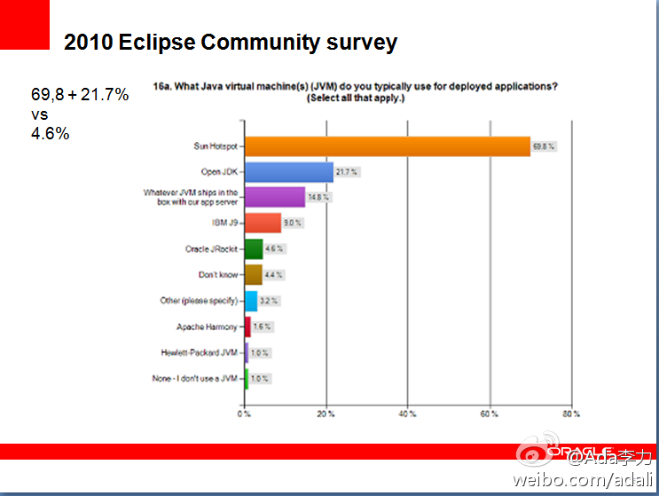

有关JVM中，Hotspot和JRockit谁去谁留, 这个疑问一直存在于Java社区中, 根据Eclipse社区的调查, Hotspot 占70%, OpenJDK 22% 而Jrockits是 5%. 这次JDK 7发布活动，会给出一个明确些的方向。 
说不定，你还蒙对了。 //@我们的奋斗:回复@Ada李力:JHotRockit@Ada李力:有关JVM中，Hotspot和JRockit谁去谁留, 这个疑问一直存在于Java社区中, 根据Eclipse社区的调查, Hotspot 占70%, OpenJDK 22% 而Jrockits是 5%. 这次JDK 7发布活动，会给出一个明确些的方向。
姣姣为一个暑假日记怎么写着急得哭起来，她没记清楚该什么本子写，还有日记的格式。她担心不符合规范的日记，以后会被别人笑话。我只得迂回开导她，只会笑话别人的小朋友，不是好孩子，因此根本就不用在意。但现在的小学生给教得过于怕犯错了吧。
明俊很烦人，为我买了大量碳饮料唠叨不停，说喝那玩意儿容易缺钙，而且容易上火，我最近脾气大就是证明。姣姣力挺爸爸，不但把我拿出来的饮料放回货架上，还不停地和我讨价还价，要我答应每三天才能喝一罐。姣姣阻值我喝的理由是担心我喝太多，会发疯的。气死我了，深感孤立。
为迎接姐姐，外甥女，弟媳，侄子周末来京，晚上开始大扫除。发现一个崭新的锅底全烧黑了，猜想肯定是明俊上网给忘了时间。明俊说是因为一锅水全烧干了，就发生在我和他吵架那一天。每次我和他干架，家里就会有东西遭殃，从而留下纪念，比如带彩条的显示器，掉了漆的火锅......
 网页链接 @甲骨文Java社区
网页链接 @甲骨文Java社区